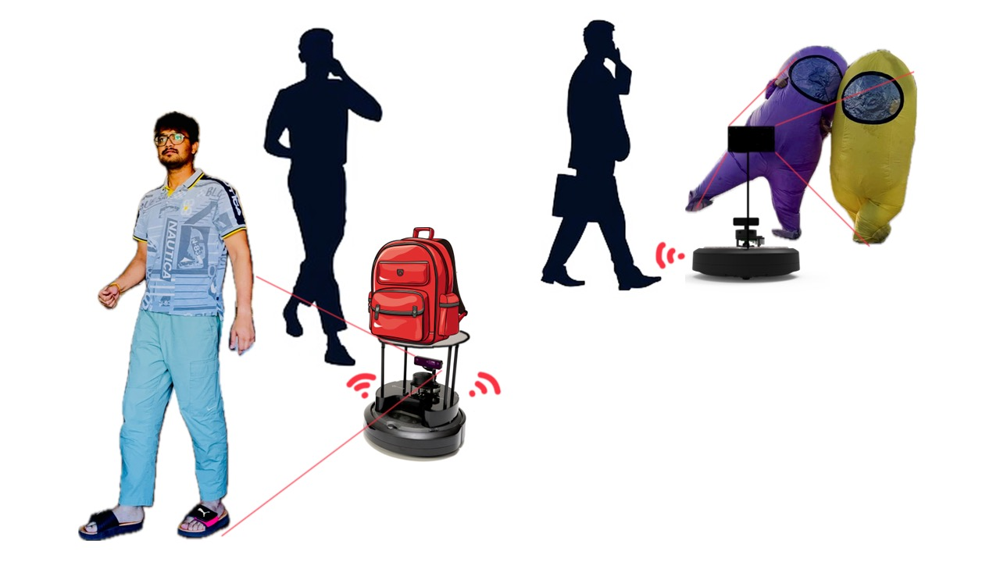
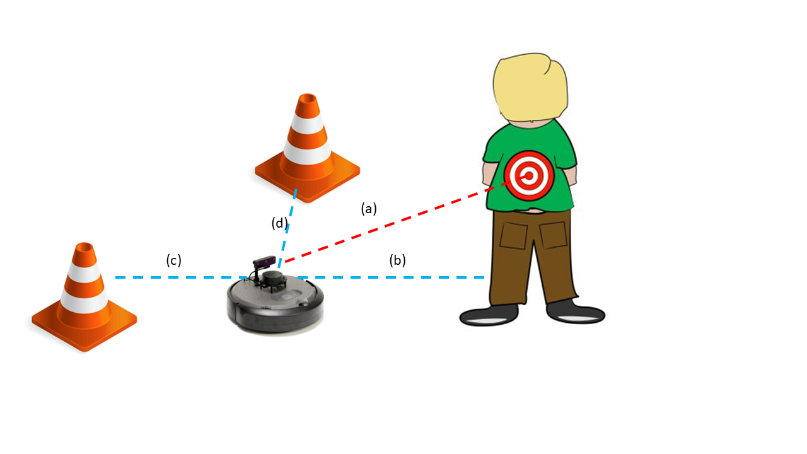
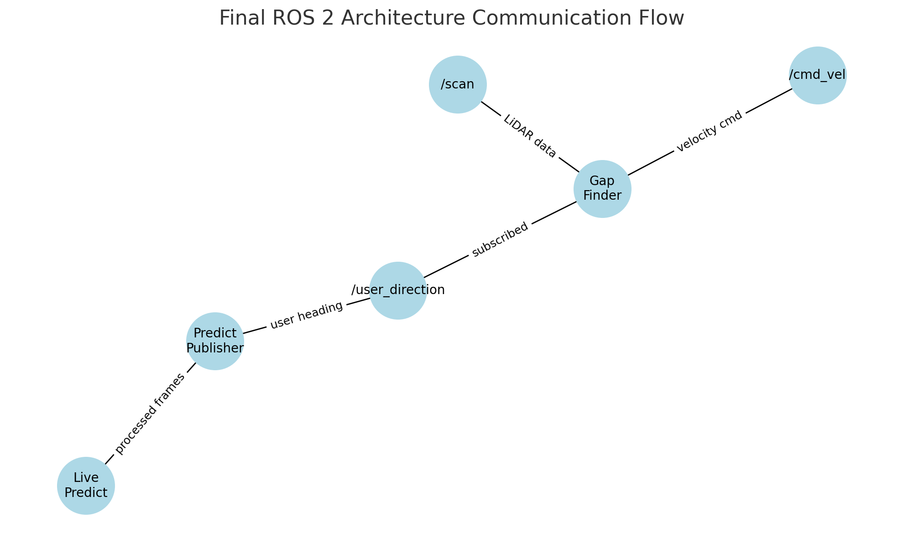
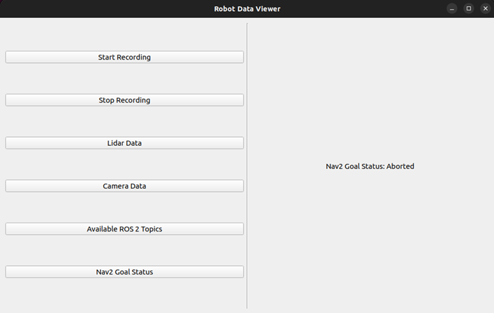

Assistive Follower Robot
A TurtleBot4 that follows one specific person through an indoor space, not just any moving object, by learning to recognize their shoes, then uses that heading together with LiDAR based gap finding to stay close while avoiding obstacles.
Mission
The goal was hands free transport: a robot that can carry groceries, tools, or a camera while trailing its assigned user through a room full of other people and obstacles. That means two problems have to be solved together, not separately: knowing who to follow, and knowing how to move safely while following them.

The initial scope was more ambitious: full SLAM integration, the robot leading the user rather than trailing, and a layered navigation stack combining reactive gap finding with a SLAM based fallback. Hardware limitations, mainly the depth camera and the turtlebot4_navigation package, forced a scope cut. The final system is narrower and it works: local path planning, obstacle avoidance, and user tracking through shoe detection.
How the robot knows who to follow
Rather than trying to recognize a face or a full body from a Raspberry Pi with a limited field of view camera, the team trained a lightweight model to detect and localize the user's shoes. A ResNet18 backbone, with its final layer replaced for regression, takes an image and outputs the shoe's horizontal offset, its distance from the camera, and an orientation angle.

Training data collection was deliberately controlled: a camera fixed at 192 millimeters off the ground, a coordinate grid marked on the floor, and eight images captured per floor position across five distances, so the model learns how shoe size and screen position change with depth. Images were labeled with LabelMe for horizontal offset, distance, and orientation. The model was trained with PyTorch using mean squared error loss and the Adam optimizer, then exported to a .pth file for onboard inference.
Control and navigation
At runtime, a prediction node subscribes to the OAK D RGB stream, runs the shoe detection model, and publishes the estimated user heading. A gap finding node subscribes to that heading alongside the LiDAR scan, smooths the scan, masks a safety bubble around the closest obstacle, and steers toward the widest gap that still points roughly at the user.
- OAK D camera
- Shoe detection model
- Heading prediction
- LiDAR gap finding
- Velocity command

What did not work, and the pivot
The team's original design layered a reactive gap finder on top of a SLAM plus Nav2 fallback, so the robot could fall back on a mapped route whenever no gap was visible. It was demonstrated successfully in a controlled lab setting, but not reliably. Two integration problems drove the eventual descope.
- Command conflicts Nav2's controller and the custom gap finder both published velocity commands to the same topic at once, producing erratic motion that parameter tuning could not fully resolve.
- Missing coordinate frames A custom A star planner was built to remove the Nav2 dependency entirely, but it could not consistently obtain the transforms between odometry, base link, and map frames it needed, so the robot could localize but not reliably follow its own generated path.
The fix that mattered most was not clever, it was structural: drop the fragile SLAM plus Nav2 fallback and commit to a single reliable reactive controller. Along the way, a recurring and non obvious issue was TF topics not resolving correctly under the robot's namespace, solved by explicitly remapping /tf and /tf_static to their namespaced equivalents at runtime, both for SLAM tools like view_frames and for the custom nodes themselves.
Demo and debugging tools
A PyQt5 interface was built alongside a dummy NavigateToPose action server, mainly for debugging: it displays live LiDAR scans and camera images and tracks navigation status through the standard goal status topic, showing states like idle, navigating, or completed.

Team
- Rhutvik PachghareSystems and navigation development
- Mohammad NasrVision pipeline: shoe detection model, data collection, real time inference integration
- Shashank Singh DeoSystems integration and testing